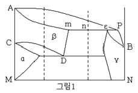
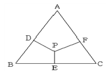
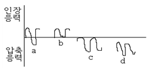

금속재료산업기사 (2005-09-04 기출문제)
1과목: 금속재료
1. 구리합금의 주된 사용 용도로서 틀린 것은?
- 항공기용
- 전기배선용
- 열교환기용
- 건축물 외곽장식용
(정답률: 62%)

2. 탄소강에서 Mn의 영향으로 틀린 것은?
- 강의 담금질 효과를 증대시켜 경화능이 커진다.
- 강의 연신율을 그다지 감소시키지 않고 강도, 경도, 인성을 증대시킨다.
- 고온에서 결정립 성장을 촉진한다.
- 주조성을 좋게 하며 S의 해를 감소시킨다.
(정답률: 28%)
3. 금속간 화합물의 탄화철(Fe3C)의 Fe의 원자비는 몇 %인가?
- 25%
- 33%
- 50%
- 75%
(정답률: 88%)
4. 주조용 알루미늄 합금의 열처리법을 명확하게 표기 위한 기호로 틀린 것은?
- F : 주조한 상태 그대로의 것
- O : 가공재의 풀림한 것
- H : 가공경화한 경질상태
- W : 뜨임 후 인공시효 진행중인 것
(정답률: 60%)
5. 전자강판(규소강판)에 요구되는 특성으로 틀린 것은?
- 투자율이 낮을것
- 철손이 적을것
- 사용 중 자기시효가 적을 것
- 자화에 의한 치수변화가 적을 것
(정답률: 60%)
6. Fe계 분말을 이용한 소결기계부품의 제조 공정으로 옳은 것은?
- 원료분말→혼합→압축성형→재압축→예비소결→본소결
- 원료분말→혼합→압축성형→예비소결→재압축→본소결
- 원료분말→압축성형→혼합→재압축→예비소결→본소결
- 원료분말→압축성형→예비소결→혼합→재압축→본소결
(정답률: 58%)
7. 초경합금의 특성으로 틀린 것은?
- 경도가 높다.
- 고온에서 변형이 적다.
- 연성이 크다.
- 내마모성이 크다.
(정답률: 47%)
8. 백주축화의 촉진원소로써 1%이상이 포함되면 레데뷰라이트 중 조대한 침상, 판상의 시멘타이트를 생성시키는 원소는?
- Si
- Mn
- P
- S
(정답률: 20%)
9. 고 기능성 복합표면처리 박막제조법으로 틀린 것은?
- 진공증착법, 스퍼터링법
- 이온프레팅(ion plating)법, CVD법
- 레이저 용접법, 전자빔 용접법
- 프라즈마 CVD법, MOCVD법
(정답률: 50%)
10. 고 Mn강의 일종인 Hadfield steel의 설명 중 틀린 것은?
- C 0.9~1.3%, Mn 10~14%의 조성을 가진다.
- 경도가 크고 내마모성이 좋다.
- 고온에서 급내하면 탄화물이 석출하여 취성이 있으며 절삭이 곤란하다.
- 크래셔, 전차용 장갑판 등으로 사용된다.
(정답률: 53%)
11. 배빗메탈(babbit metal)이라고 불리는 베어링 합금은?
- Mg 계 화이트 메탈이다.
- Sn 계 화이트 메탈이다.
- Co 계 화이트 메탈이다.
- Cd 계 화이트 메탈이다.
(정답률: 70%)
12. 복합재료에 관한 설명으로 틀린 것은?
- 어떤 목적과 특성을 얻기 위하여 2종 또는 그 이상의 다른 재료를 서로 합하여 하나의 재료로 만든 것을 복합재료라 한다.
- 복합화에 의한 어떤 특성을 얻으려면 복합하는 각 소재의 특성과 장점을 최소한 활용하지 않는 것이 주된 조건이다.
- 복합재료의 개념을 바탕으로 한 실용화되고 있는 재료에는 자동차 타이어, 입자분산강화 합금 등이 있다.
- 복합재료는 클래드재료, 섬유강화 재료, 분산강화재료 등이 있다.
(정답률: 77%)
13. 소성가공에 속하지 않는 것은?
- 인발
- 주조
- 압연
- 단조
(정답률: 81%)
14. HSLA강에서 적용되는 강화기구 중 강도와 충격인성을 동시에 향상시키는 가장 바람직한 방법은?
- 고용강화
- 결정립 미세화
- 석출경화
- 개재물 형상제어
(정답률: 50%)
15. Fe - C의 평형상태도에서 γ고용체에서 Fe3C(시멘타이트)의 석출이 개시하는 선은?
- A1 변태선
- A2 변태선
- Acm 변태선
- A3 변태선
(정답률: 58%)
16. 금속 결정체내에서의 결함에 대한 설명 중 맞는 것은?
- 선결함의 대부분은 전위라고 표현한다.
- 일부 결정들은 결함이 없는 완벽한 결정이다.
- 결함자체는 항상 금속성질을 향상시킨다.
- 점결함은 온도가 상승함에 따라 대부분 감소한다.
(정답률: 63%)
17. 면심입방격자 (FCC)의 단위격자 소속 원자수와 원자의 충진율을 바르게 짝지은 것은?
- 단위격자 소속 원자수 : 4, 충진율 : 74%
- 단위격자 소속 원자수 : 6, 충진율 : 65%
- 단위격자 소속 원자수 : 3, 충진율 : 82%
- 단위격자 소속 원자수 : 8, 충진율 : 54%
(정답률: 86%)
18. 개질처리에 효과를 얻는 방법 중 가장 많이 사용하는 방법은?
- 금속나트륨을 쓰는 법
- 수산화나트륨을 쓰는 법
- 가성소오다를 쓰는 법
- 불화물을 쓰는 법
(정답률: 39%)
19. 열간가공(HOT WORKING)에 대한 설명으로 틀린 것은?
- 방향성 있는 주조조직이 제거된다.
- 재결정온도이하에서 처리하는 가공방법이다.
- 합금원소의 확산으로 재질의 균일과가 가능하다.
- 가공완료온도가 너무 높으면 결정입자가 조대하게 된다.
(정답률: 71%)
20. 한 개의 결정핵이 발달하여 나뭇가지 모양을 이룬 것은?
- 편상세포
- 수지상정
- 과냉
- 고스트라인
(정답률: 80%)
2과목: 금속조직
21. 철강의 격자변태와 관련이 없는 변태점은?
- A4
- A3
- A2
- A1
(정답률: 29%)
22. 다음 금속 중 선팽창계수가 큰순서로 배열된 것은?
- Pb ＞ Zn ＞ Al ＞ Ag
- Pb ＞ Al ＞ Ag ＞ Zn
- Zn ＞ Ag ＞ Al ＞ Pb
- Zn ＞ Pb ＞ Al ＞ Ag
(정답률: 16%)
23. 탄소강의 탄소량에 따른 물리적 성질의 변화로 틀린 것은?
- 탄소량의 증가에 따라 비중은 증가한다.
- 탄소량의 증가에 따라 배열은 증가한다.
- 탄소량의 증가에 따라 열팽창 계수는 감소한다.
- 탄소량의 증가에 따라 항자력은 증가한다.
(정답률: 40%)
24. Fe-C상태도에서 레데뷰라이트(ledeburite)를 바르게 표기한 것은?
- α-고용체
- γ-고용체+Fe3C
- δ-고용체
- α-고용체+γ-고용체
(정답률: 64%)
25. FCC금속에서 슬립이 가장 쉽게 일어나는 면과 방향은?
- (111), [110]
- (100), [110]
- (101), [111]
- (111), [111]
(정답률: 65%)
26. 전위선의 일부가 어느 슬립면 위에서 옆의 슬립면 위로 이동하면 그 경계에서 전위선은 계단상이 되는 현상을 무엇이라 하는가?
- 고작작용
- 분위기
- 전위망
- 조그
(정답률: 65%)
27. 그림(1)의 상태도상에 나타난 2가지 반응으로 맞는 것은?

- 공정, 포정반응
- 포정, 편정반응
- 공석, 편정반응
- 공석, 포정반응
(정답률: 28%)
28. 용융 금속의 응고시 핵생성 속도에 가장 영향을 크게 미치는 인자는?
- 냉각속도
- 시기
- 수량
- 용융금속의 량
(정답률: 79%)
29. 그림에서 P점 조성 합금중의 A성분의 양은?

- DP
- DA
- PE
- FC
(정답률: 73%)
30. 다음 중 탄성율은? (단, σ : 응력, ε : 변형율)
- E = σ/ε
- E = σㆍε
- E = ε/σ
- E = σ+ε
(정답률: 50%)
31. 합금에서 석출경화를 이용할 수 있는 것은 어떤 종류의 상태도를 가질 때인가?
- 고용한도 곡선이 온도 강하에 따라 감소하는 형의 상태도
- 고용한도 곡선이 온도 강하에 따라 증가하는 형의 상태도
- 고용한도 곡선이 온도강하와 무관한 상태도
- 고용한도 곡선이 수평인 상태도
(정답률: 50%)
32. 금속이 완전고용체를 만들면 그 성질의 변화는 어떻게 되겠는가?
- 경도 강도증가, 연신 및 전기저항이 저하한다.
- 경도증가, 강도저하, 연신 및 전기 저항이 증가한다.
- 경도 강도 증가, 연신저하, 전기저항이 증가한다.
- 경도 강도증가, 연신증가, 전기저항이 감소한다.
(정답률: 53%)
33. 용융 금속이 응고 성장할 때 불순물(不純物)이 가장 많이 모이는 곳은?
- 결정입내(結晶粒內)
- 결정입계(結晶粒界)
- 결정입내의 중심부
- 결정입계와 입내
(정답률: 73%)
34. 다음 설명 중 틀린 것은?
- 탄소강은 pH4 이하에서 부식속도가 빠르다.
- 탄소강은 pH10 이상에서는 거의 부식되는 않는다.
- 알루미늄은 pH10 이상에서 부식속도가 빠르다.
- 알루미늄은 pH3-10 의 범위에서 부식속도가 빠르다.
(정답률: 20%)
35. Fe-C 마텐자이트 합금에서 탄소함량의 증가에 따른 가장 주된 강화기구는?
- 고용체강화
- 석출강화
- 분산강화
- 결정립도 미세화
(정답률: 64%)
36. 풀림(annealing)처리에 의해서 재결정 및 결정립성장이 일어난 금속을 더욱 고온도로 가열하면 수소의 결정립이 다른 결정립과 합해져서 매우 크게 성장하는 현상은?
- 정상결정성장
- 풀림쌍정
- 1차 재결정
- 2차 재결정
(정답률: 90%)
37. 금속이 가공(압연, 압출 등)될 때 그 가공도가 증가하면 어떤 현상이 일어나는가?
- 인성이 증가한다.
- 경도와 강도가 증가한다.
- 충격흡수에너지가 증가한다.
- 전기저항이 감소한다.
(정답률: 72%)
38. 다음 중 펄라이트변태를 설명한 것 중 틀린 것은?
- 확산변태, 공석변태라 한다.
- 결정립의 크기가 크면 펄라이트 변태가 촉진된다.
- Fe3C를 핵으로 발생 성장한다.
- 합금 원소에 따라 펄라이트 변태 온도는 증가 또는 감소한다.
(정답률: 48%)
39. 금속의 결정구조의 해석에 적합한 방법은?
- XRD
- SEM
- UTM
- HRB
(정답률: 46%)
40. 삼성분계 상태도의 평면도는 무엇으로 타나내는가?
- 이등변 삼각형
- 오각형
- 정삼각형
- 정사각형
(정답률: 60%)
3과목: 금속열처리
41. 염욕열처리에서 염을 관리하기 위하여 실시하는 시험방법은?
- 설퍼프린트 시험
- 강박 시험
- 조미니 시험
- 헐셀 시험
(정답률: 71%)
42. 침탄경화된 강의 유효 경화층깊이를 나타내는 경도 기준값은?
- HV 650
- HV 550
- HV 400
- HV 300
(정답률: 71%)
43. 가스 질화-침탄에 사용되는 원료가스는?
- NH3 gas
- NH3 + DX gas
- NH3 + RX gas
- NH3 + N2 gas
(정답률: 32%)
44. 강을 A1 변태점 이상에서 행하여야 하는 처리는?
- 저온 어닐링
- 고온 템퍼링
- 시효 처리
- 어닐링
(정답률: 30%)
45. 금속의 변태 중 자기변태를 바르게 설명한 것은?
- 고체 상태로 어느 온도에 있어서 원자의 배열과 결정구조가 변화한다.
- 원자의 배열은 변화하지 않고 강자성으로부터 상자성으로 자성이 변화한다.
- 체적에 팽창이나 수축현상을 볼 수 있고 기계적 물리적 성질이 변화한다.
- 금속 또는 합금에서 응고된 후에 내부상태에 변화를 일으키는 성질이다.
(정답률: 74%)
46. 열처리할 때 강재를 필요로 하는 온도까지 가열하고 일정한 시간동안 유지 후 적절한 방법으로 냉각을 하는데 소정 온도이상으로 가열하거나 정해진 유지시간이 경과하면 오스테나이트 입자는 조대화하여 기계적 성질에 나쁜 영향을 미친다. 오스테나이트 입자 조대강 조직의 ASTM 입도 No. 기준은?
- ASTM No. 5 이하
- ASTM No. 6 이상
- ASTM No. 8 이상
- ASTM No. 10 이하
(정답률: 23%)
47. 시효성 비철 합금의 시효 열처리 순서로 맞는 것은?
- 급냉→용체화처리→시효처리
- 용체화처리→급냉→시효처리
- 시효처리→용체화처리→급냉
- 시효처리→급냉→용체화처리
(정답률: 59%)
48. 물리적인 표면경화법에 해당하는 것은?
- 화염경화법
- 침탄법
- 질화법
- 금속침투법
(정답률: 67%)
49. 백심가단주철의 어닐링은 백선주물을 산화철과 함께 넣고 약 1000℃ 정도의 온도로 장시간 가열 하면 백선주물의 표면에는 어떤 반응이 일어나는가?
- 환원반응
- 중성반응
- 탈탄반응
- 흑연화
(정답률: 50%)
50. 알루미늄 합금 주물의 열처리 효과로 맞지 않는 것은?
- 기계적 성질 개선
- 잔류응력 제거
- 치수 안정화
- 취성증가
(정답률: 69%)
51. 가스로의 특징으로 틀린 것은?
- 노내 온돌의 조절이 용이하다.
- 가스불꽃에 의하여 노 벽으로부터의 복사열이 작용하므로 효과적이다.
- 점화는 공기를 노내에 송풍하기 전에 행하므로 안전하다.
- 노의 구조가 비교적 간단하다.
(정답률: 53%)
52. 18% Cr - 8% Ni 스테인리스강은 1000~1150℃로 가열한 후 급냉시키는 용체화 처리를 한다. 이때 얻어지는 조직은 무엇인가?
- 마텐자이트
- 오스테나이트
- 트루스타이트
- 솔바이트
(정답률: 47%)
53. 화염경화 열처리시 열원으로 쓰이지 않는 가스는?
- 프로판 가스
- 부탄 가스
- 산소-아세틸렌 가스
- 암모니아 가스
(정답률: 84%)
54. 탄소공구강의 템퍼링에 의한 조직의 변화 과정으로 틀린 것은?
- 제1단계 : 마텐자이트 → ε 탄화물 석출
- 제2단계 : 잔류 오스테나이트 → 저탄소 마텐자이트
- 제3단계 : 저탄소 마텐자이트 → Fe3C 석출
- 제4단계 : 마텐자이트 →기지조직에 편석
(정답률: 32%)
55. 마텐자이트 스테인리스강의 용점 후 열처리방법으로 맞는 것은?
- 변태점 아래 700~790℃까지 가열한 후 540℃까지 서냉하고 이어서 보통 냉각한다.
- 800~850℃까지 가열한 후 공기 냉각한다.
- 550~680℃ 부분에서 서냉한다.
- 300℃에서 공기 냉각한다.
(정답률: 52%)
56. 주방상태에서 유리탄화물(Fe3C)이 없는 회주철의 경도를 낮추고 각부의 경도를 균일하게 해서 피삭성을 향상시킬 목적으로 펄라이트 중의 탄화물을 분해시키는 열처리 방법은?
- 노말라이징
- 연화풀림
- 응력제거풀림
- 확산 풀림
(정답률: 57%)
57. 강의 마텐자이트조직이 경도가 큰 이유가 될 수 없는 것은?
- 결정의 미세화
- 급냉으로 인한 내부응력
- 탄소원자에 의한 Fe격자의 강화
- 확산 변태에 의한 시멘타이트의 분리
(정답률: 65%)
58. 열처리 균열 발생 감소를 위한 설계상의 방법 중 잘못 된 것은?
- 내면의 우각에 R을 준다.
- 돌기물은 일체로 한다.
- 살이 엷은 부분에 구멍이 집중되지 않도록 한다.
- 두꺼운 단면과 엷은 단면은 불리 시킨다.
(정답률: 45%)
59. 판스프링(두께 1mm, 총길이 100mm인 굴곡 있는 형상, 탄소 공구강판으로 탄소량 0.75~0.85%)은 연속항온열처리(RX 가스분위기 가열 : 섭씨 830도 2~3분 유지, 염욕냉각: 섭씨 360도)를 실시하였다. 열처리 결과 제품의 심부 경도값의 편차가 마이크로 비커스 값으로 20~100을 벗어나는 제품의 10% 이상되는 불량이 발생되어 작업이 중단되었다. 이 문제를 해결하기 위한 작업 및 설비상 조치로 틀린 것은?
- 제품의 실제 가열온도 및 유지시간이 정확한지를 점검한다.
- 제품의 적재 방법을 개선하여 제품 개별 담금질이 되도록 장입한다.
- 항온염 탱크 내의 교반기 및 이송 컨베어 속도를 빨리하여 개별 분산 냉각 속도를 개선한다.
- 제품의 가열온도를 900℃로 올리고 항온염의 온도를 250℃로 낮추어 작업한 후 뜨임 작업으로 경도를 맞춘다.
(정답률: 50%)
60. 복원중 (문제 오류로 문제 및 보기 내용이 정확하지 않습니다. 정확한 내용을 아시는 분께서는 오류신고를 통하여 내용 작성 부탁드립니다. 정답은 3번입니다.)
- 복원중
- 복원중
- 복원중
- 복원중
(정답률: 56%)
4과목: 재료시험
61. 강성계수 G를 측정하는 시험법은?
- 비틀림 시험
- 피로 시험
- 에릭센 시험
- 크리프 시험
(정답률: 57%)
62. 인장시험에서 시험편의 물림 장치에 대한 규정에 어긋나는 것은?
- 시험편에 물림 장치가 있어야 한다.
- 시험편이 척(chuck)내에서 파괴되어야 한다.
- 시험 중 시험편은 중심선상에 있어야 한다.
- 물림부에서의 물림힘이 같아야 한다.
(정답률: 69%)
63. 크리프 시험에서 크리프곡선의 현상(제1단계 - 제2단계 - 제3단계)을 옳게 구분한 것은?
- 감속 크리프 - 가속 크리프 - 정상 크리프
- 감속 크리프 - 정상 크리프 - 가속 크리프
- 가속 크리프 - 정상 크리프 - 감속 크리프
- 정상 크리프 - 가속 크리프 - 감속 크리프
(정답률: 67%)
64. 미소경도시험이 필요치 않는 경우는?
- 시험편이 작고 경도가 높은 부분 측정
- 도금층 등 표면의 경도측정
- 박판 또는 가는 선재의 경도측정
- 경도가 낮고 시험편이 큰 재료
(정답률: 58%)
65. 프로드법으로 자화를 한 경우 적용하는 탈자 전류로서 적당한 것은?
- 자화전류보다 강한 전류
- 자화전류보다 약한 전류
- 자화전류와 동일한 전류
- 탈자전류는 자화전류와 관계없음
(정답률: 29%)
66. 비커스 경도시험 방법의 특징이 아닌 것은?
- 시험하중을 전대로 임의 변화시킬 수 없다.
- 30kg의 하중에서 HV가 250일 때 HV(30)250으로 표시한다.
- 대단히 작은 재료나 연한 재료의 측정이 가증한다.
- 꼭지각이 136°인 다이아몬드 4각추를 압입자로 사용한다.
(정답률: 43%)
67. 충격 시험에 대한 설명 중 잘못된 것은?
- 하중을 가하는 방법에 따라 인장, 비틀림, 굽힘 시험법이 있다.
- 샤르피 충격시험이 있다.
- 충격치는 단위면적당의 충격흡수에너지로 표시한다.
- 충격 하중에 대한 저항력을 측정한 시험으로 정적시험이다.
(정답률: 77%)
68. 육안조직 검사와 관계없는 것은?
- 마크로(macro)검사라고도 한다.
- 배율 10배 이하의 확대경으로 검사한다.
- 결정입경이 0.1mm 이하의 것을 검사한다.
- 조직의 분포상태, 모양, 크기 등을 판정한다.
(정답률: 56%)
69. KSB 0801 에 의해 주조한 일반 주강 및 주철품을 인장시험 하고자할 때 가장 적당한 봉 시험편은?
- 1호
- 5호
- 8호
- 11호
(정답률: 48%)
70. 비파괴시험으로 탐상제 및 유화제의 취급상 안전과 화재예방에 대한 특별한 관리가 필요한 것은?
- 침투탐상검사법
- 섬프검사법
- 마크로 검사법
- 와류탐상법
(정답률: 32%)
71. 탄소강, 저합금강에서 펄라이트의 식별을 위한 부식제는?
- 피크린산 알콜 용액
- 황산, 초산용액
- 주석산용액
- 수산화나트륨액
(정답률: 56%)
72. 비파괴시험 방법으로 맞는 것은?
- 피로 시험
- 크리프 시험
- 전단 시험
- 수산화나트륨액
(정답률: 39%)
73. 시험 전의 직경 14mm, 시험 후 직경이 5mm 일 때 단면 수축률(%)은?
- 약 21
- 약 45
- 약 63
- 약 87
(정답률: 12%)
74. 단순 반복응력에서 피로저항이 큰 재료는 반복응력에서도 대체로 강하기 때문에 특별한 경우를 제외하고 재료의 피로강도 평가는 단순 반복응력에 대한 피로상태를 시험애서 정한다. 그림에서 단순반복응력 중 완전양진응력은?

- a
- b
- c
- d
(정답률: 34%)
75. 피로시험의 S-N 선도에서 N은 무엇을 의미하는가?
- 응력
- 반복횟수
- 시간
- 가공경화지수
(정답률: 67%)
76. 그라인더 불꽃시험에 대한 설명으로 관계 없는 것은?
- 밝지 않은 곳에서 시험한다.
- 유선의 길이는 0.5m가 되는것이 좋다.
- 불꽃은 수평으로 비산토록 한다.
- 불꽃은 전체를 한순간에 관찰한다.
(정답률: 31%)
77. 화학분석 시험에서 유해결함 (취성)으로 분류하는 원소가 아닌 것은?
- Si
- P
- S
- Cu
(정답률: 32%)
78. 금속 조직 시험에 앞서 시험편의 준2l 순서로 맞는 것은?
- 시험편 채취 - Mounting - Grinding - Polishing - 세척 - 부식
- 시험편 채취 - Grinding - Mounting - Polishing - 세척 - 부식
- 시험편 채취 - Polishing - Mounting - Grinding - 세척 - 부식
- 시험편 채취 - Grinding - Polishing - Mounting - 세척 - 부식
(정답률: 75%)
79. 다음 중 방사선 측정단위 중 흡수선량의 단위는?
- Ci
- Roentgen
- Gy
- rem
(정답률: 28%)
80. 와전류탐상 시험을 일명 무슨 시험이라고 하는가?
- 커플링 시험
- 응력시험
- 전자유도시험
- 에릭센시험
(정답률: 67%)